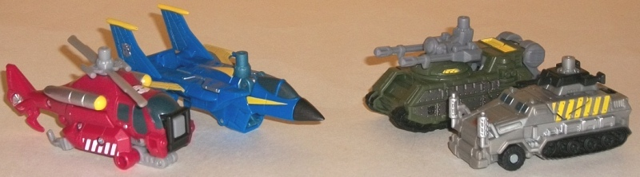
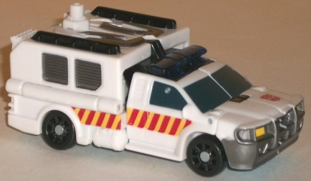
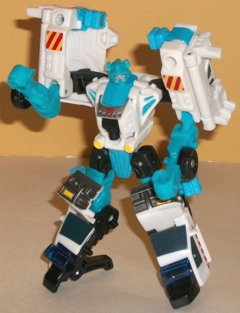
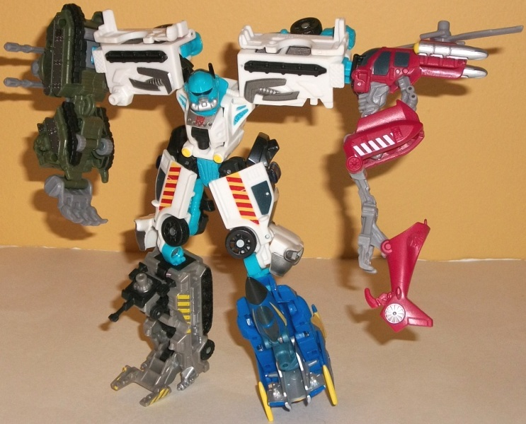

Stakeout
w/ Protectobots
Stakeout
w/ Protectobots
(NOTE: Because this set is composed of repaints,
this is not a full-blown review. This mainly covers any changes made to
the set and the color scheme, and merely compares it to the original versions
of these molds. For a review on the Aerialbot limbs-- two of which are
repainted for this set-- check out the review of Skyburst
here
.
For a review on the Combaticon limbs-- two of which are also repainted
for this set-- check out the review of Bombshock
here
.
For a review on Smolder, the mold used for Stakeout, go
here
.)
Protectobots

Allegiances
: Autobot
Difficulty of Transformations
: Automatic
Color Schemes
: Light milky brownish
gray, moderately dark red, milky gray, moderately dark blue, dark pale
military green, black, yellow, and some white, silver, very dark glossy
blue, dull pale bluish green, and metallic gunmetal gray
Individual Rating
: 6.8
The Protectobot limbs
are a bit of a motley group. The only one that really says "Protectobot"
is the helicopter; the rest are military vehicles. Granted, you can extend
the whole "Protectobot" term to include the military since they can protect
people, but "Protectobots" have up until this point always been emergency
& rescue vehicles. Anyways, for the most part this group of repainted
drones looks pretty nice. The helicopter is quite a nice shade of red,
with the light milky brownish red serving as a neutral color. (I'm not
a fan of the brownish gray, but there's not a lot of it on this limb.)
The silver metallic details-- along with the yellow and white "rescue-esque"
paint apps, like the white bars along the bottom-- offer some great contrast
against the red. The dull dark blue used for the windows of this drone
(as well as the others) is also a pretty decent and fitting color. The
jet is painted in a great "Blue Angels" color scheme with a rather vibrant
(but somewhat dark) shade of blue and yellow stripes along the wings--
it looks really nice, and is my favorite deco job of the limbs. The pale
bluish green plastic serves a very nice secondary color on that limb, to
boot. The tank-like vehicle is now a fitting dark green, which of course
suits a military vehicle. The yellow serves as a fair contrast color to
the green, though I wish there was another bright color to offset all the
dark, dull green and brownish gray on that drone. (The metallic gunmetal
gray on the sides looks excellent as always.) The other military drone
is the only dud of the set color-wise, being mostly that extraordinarily
dull shade of brownish gray. Granted, there's a few paint apps on the sides
to help mix it up some, like the yellow stripes and the black treads, but
it's not enough, in my opinion. The silver paint apps on this drone also
blend in so much with the brownish gray they're nearly indistinguishable
at a casual glance, so that was a bit of a waste of good paint.
No mold changes have
been made to the Protectobots (so yes, the jet limb still has that catch
sometimes when auto-transforming).
The Protectobot limbs
are a bit of mixed bunch in pretty much every respect. Their theme is mostly
military with one rescue 'copter thrown in; the repainted Combaticon limbs
are the better molds, but have less exciting color schemes; and the repainted
Aerialbot limbs are worse molds, but have considerably more vibrant, eye-catching
color palettes. As such, they're about middle-of-the-road as far as Power
Core drone teams go.
Stakeout



Allegiance
: Autobot
Difficulty of Vehicle/Robot Transformation
:
Easy
Difficulty of Torso Transformation
:
Easy
Color Scheme
: White, light sky blue,
and some black, yellow, silver, metallic gunmetal gray, dark red, light
orangish yellow, very dark glossy blue, and dark transparent blue
Individual Rating
: 8.6
Stakeout here is a bit
of a loose "reverse" homage of the G1 Protectobot leader Hot Spot. He's
an emergency vehicle and primarily white, but has the same light sky blue
coloration in robot mode that's the main color of Hot Spot. The white and
sky blue go together surprisingly well, and a fairly big upside to using
sky blue as a main color is that the combiner ports don't stick out because
they're the same color! That said, the overall color scheme could use a
main dark color to offset all the brightness. There is some black plastic,
granted, but it's a secondary color at best. In vehicle mode there's plenty
of paint apps to help contrast against the white, with dark glossy blue
paint on the windows; gunmetal gray on some of the vents and details on
the top, as well as the front bumper; and a bit of black on the wheels
and rails. The alternating red-and-yellow stripes along the sides also
help to give Stakeout even more of a emergency vehicle vibe (as if the
dark blue sirens didn't already do that, heh). However, there's considerably
fewer (visible) dark paint apps in robot mode, with a fair amount being
silver, another light color. (I do like the transferring of the rescue
stripes to the shoulders in robot mode-- nice touch, there.)
No mold changes have
been made to Stakeout.
Stakeout is a pretty
nice "lite homage" to the G1 Protectobot Hot Spot in terms of his color
scheme and general alt mode, and he's got a pretty unique, eye-catching
color scheme on a great mold besides, with a pretty good number of paint
apps. That said, he could've used a major dark color to offset all that
bright in his robot mode, so I'd recommend this mold's previous use as
Smolder slightly more.
Stakeout w/ Protectobots Bio
:
Before he became a team commander, Stakeout
was considered a loose cannon by many Autobots. He often ventured out on
his own, against orders, determined to win the war on his terms or not
at all. Undergoing the Power Core process has mellowed him. He has learned
that with power comes responsiblity, and is determined to use his new power
for the greatest good.
Strength: 7.0
Intelligence: 5.0
Speed: 7.0
Endurance: 9.0
Rank: 4.0
Courage: 9.0
Fireblast: 8.0
Skill: 7.0
Reviews by Beastbot
Back to Power
Core Combiners Index